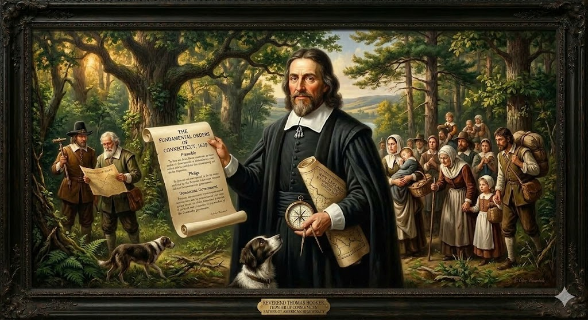
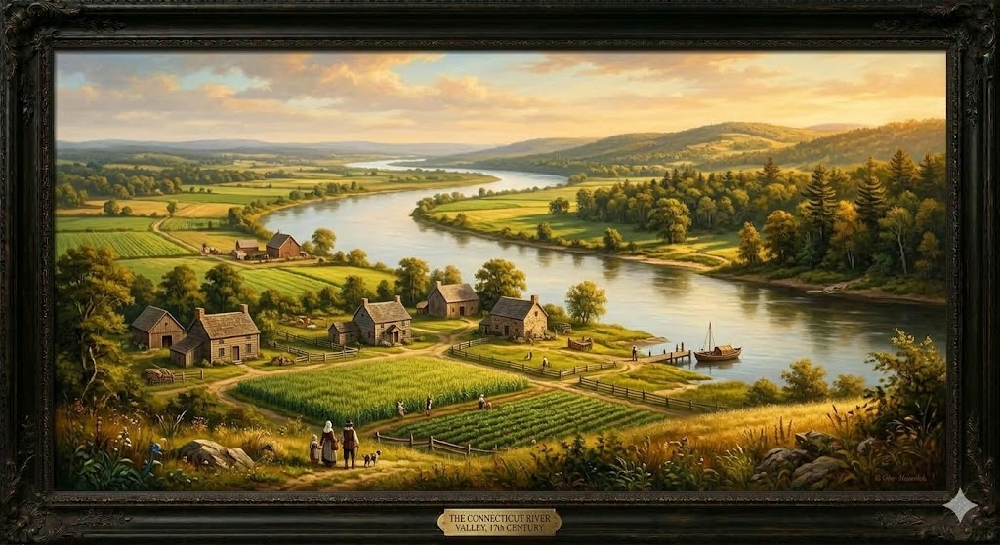

1. שנות פעילות, הקמה ויעדים
שנת הקמה: אביב 1636 (אמנם היו שם סוחרי פרוות הולנדים קודם לכן, אך הקמת המושבה הממוסדת מיוחסת למסעו של תומאס הוקר).
ישות מקימה: קבוצת פוריטנים פורשים (Dissenters) ממסצ'וסטס. הם הקימו מושבה באופן עצמאי ללא זיכיון רשמי בתחילה. רק בשנת 1662 השיג המושל ג'ון וינתרופ הבן זיכיון מלכותי (Charter) מצ'ארלס השני שהעניק לקונטיקט מידה חסרת תקדים של ממשל עצמי.
היעדים המקוריים (רוחניים וכלכליים): היעד הפוליטי היה להקים קהילה שבה סמכויות השלטון אינן מרוכזות רק בידי אליטה דתית צרה. היעד הכלכלי היה מציאת אדמות חקלאיות פוריות. אזור בוסטון סבל מאדמה סלעית, בעוד שעמק נהר הקונטיקט הציע אדמות סחף משובחות וגישה למסחר בפרוות בפנים היבשת.
2. רקע המייסד: תומאס הוקר

תומאס הוקר (Thomas Hooker) (1586–1647)
רקע: הוקר נולד באנגליה למשפחת איכרים ממעמד בינוני. הוא רכש השכלה באוניברסיטת קיימברידג' והפך לדרשן כריזמטי ופופולרי מאוד. לאחר שנרדף על ידי הרשויות האנגליקניות, נמלט להולנד ב-1630, ומאוחר יותר הפליג למסצ'וסטס והפך לכומר הראשי של קהילת ניוטאון (קיימברידג' של ימינו).
משבר אידאולוגי מול מסצ'וסטס: הוקר נכנס למסלול התנגשות אידאולוגי עם ג'ון וינתרופ ממסצ'וסטס. בעוד וינתרופ האמין באוליגרכיה שלטונית דתית, הוקר האמין שלכל הגברים בקהילה, גם אלו שאינם חברי כנסייה רשמיים, צריכה להיות זכות להצביע בבחירות המקומיות, שכן הכוח הפוליטי נובע מהסכמת העם.
הישגים: באביב 1636 הוביל את הפיצול ומסע הייסוד של העיר הרטפורד. הישגו ההיסטורי הגדול ביותר היה דרשה ב-1638 בה הכריז כי "ייסוד הסמכות תלוי בהסכמה החופשית של האנשים". דרשה זו הובילה לכתיבת "הצווים היסודיים של קונטיקט".
3. אידאולוגיה: החוקה הראשונה (Fundamental Orders)
האידאולוגיה שהניעה את מושבת קונטיקט הייתה שילוב מרתק של אמונה דתית עמוקה (פוריטניזם) יחד עם רעיונות פוליטיים רדיקליים לזמנם.
- הפרדת זכות ההצבעה מהכנסייה: זה היה החידוש הגדול. בקונטיקט לא היית חייב להיות חבר כנסייה מאושר כדי לקבל זכות בחירה. כל גבר שהיה בעל רכוש בסיסי יכול היה להצביע, מה שפתח את המערכת הפוליטית למעגלים רחבים.
- "הצווים היסודיים של קונטיקט" (1639): מסמך זה (Fundamental Orders of Connecticut) נחשב על ידי היסטוריונים לחוקה הכתובה הראשונה במסורת המערבית. המסמך פירט את מבנה הממשלה, בחירת המושל, והגדרת זכויות. המסמך אינו מזכיר כלל את סמכותו של מלך אנגליה – הממשל נשען בלעדית על הסכמת האנשים (Popular Sovereignty). בזכות מסמך זה, קונטיקט מכונה "מדינת החוקה".
4. גיאוגרפיה ובחירת המיקום: עמק הנהר הגדול

מידע הידרולוגי וגיאוגרפי: נהר הקונטיקט הוא הנהר הארוך ביותר בניו אינגלנד. בחלקו הדרומי, הנהר הוא אסטואר (שפך נהר) המושפע מזרמי גאות ושפל של האוקיינוס, מה שמאפשר לספינות אוקיינוס לשוט עשרות קילומטרים לתוך היבשת.
אקולוגיה ופוריות: האזור שסביב הנהר זכה לכינוי "עמק נהר הקונטיקט". בניגוד לאדמה הסלעית של בוסטון, הנהר הציף את העמק במשך אלפי שנים והותיר אחריו אדמת סחף (Alluvial soil) עמוקה וכהה. זו הייתה האדמה החקלאית העשירה ביותר בכל ניו אינגלנד, אידיאלית לגידול תירס וחיטה.
ייסוד הרטפורד והתנגשויות צבאיות
הבחירה להקים את היישוב בעמק הייתה מלווה בסכנות אסטרטגיות:
- דחיקת ההולנדים: ההולנדים מניו יורק כבר הקימו עמדת סחר בשם "התקווה הטובה" באזור. האנגלים פשוט התעלמו מהם, בנו יישובים סביבם ודחקו אותם החוצה.
- מלחמת הפקווט (Pequot War): השליטה בעמק הובילה להתנגשות ישירה עם שבט הפקווט האימתני. המתח על זכויות הסחר הוביל לפרוץ מלחמה (1636-1638) שהסתיימה בהשמדת כוחו של השבט לחלוטין על ידי מיליציות אנגליות ובעלי בריתם.
5. כלכלה ומערכת הסחר
כלכלת קונטיקט ניצלה באופן מקסימלי את הגיאוגרפיה הנהרית שלה:
- ראשית הדרך - סחר הפרוות: המניע הכלכלי הראשון היה סחר הפרוות (עורות בונה) מול השבטים של פנים היבשת. השליטה על הנהר אפשרה לאנגלים ליירט את הסחר שזרם מהצפון.
- המהפכה החקלאית בעמק: אדמת הסחף הפורייה הפכה את קונטיקט ל"סל הלחם" של ניו אינגלנד. בניגוד למסצ'וסטס, כאן גידלו כמויות עצומות של חיטה, תירס, שעורה ושיפון, לצד משק חי.
- הסחר המשולש עם הקריביים: במחצית השנייה של המאה ה-17, קונטיקט בנתה ספינות ששטו מנמלי הנהר היישר אל איי הודו המערבית. הם ייצאו קמח ובקר למושבות הסוכר, ובתמורה ייבאו סוכר ודבשה (מולסה), מסחר שהעשיר את המושבה.
6. דמוגרפיה ומבנה חברתי
ההתפתחות הדמוגרפית של קונטיקט משקפת הצלחה מסחררת של התיישבות מבוססת-משפחה בתנאים סביבתיים נוחים:
- הגירת משפחות: בניגוד לוירג'יניה, קונטיקט אוכלסה מלכתחילה על ידי משפחות פוריטניות ממעמד הביניים שהיגרו יחדיו, מה שיצר חברה יציבה מיידית.
- תוחלת חיים גבוהה ו"המצאת הסבא": החורפים הקרים מנעו את מחלות הדרום, ומי השתייה היו נקיים. שיעור תמותת התינוקות היה נמוך מאוד, ומתיישבים רבים חיו עד גיל 70. תופעה זו כונתה "המצאת הסבא והסבתא" – לראשונה, ילדים רבים גדלו כשהם מכירים את סביהם.
- הומוגניות וריבוי טבעי: האוכלוסייה נותרה הומוגנית מאוד (אנגלים, פוריטנים, חקלאים עצמאיים) והכפילה את עצמה לערך כל 25 שנה בזכות משפחות ברוכות ילדים וריבוי טבעי מהיר.
7. מאבקי השליטה: אגדת "אלון הזיכיון" (The Charter Oak)
עצמאותה של קונטיקט, כפי שהוגדרה ב"צווים היסודיים", עמדה במבחן מול כוחה הדורסני של האימפריה הבריטית:
איום הסיפוח וגניבת המסמך (1687)
- מועד האירוע: אוקטובר 1687.
- אישים בולטים: המלך ג'יימס השני (King James II) הקתולי והרודני, והמושל האימפריאלי סר אדמונד אנדרוס (Sir Edmund Andros).
- מהלך המאבק והאגדה: בשנת 1686, המלך ג'יימס השני החליט לבטל את עצמאותן של כל מושבות ניו אינגלנד (כולל מסצ'וסטס וקונטיקט) ולמזג אותן לישות אחת ענקית הנשלטת כדיקטטורה: "דומיניון ניו אינגלנד". הוא שלח את המושל אנדרוס להרטפורד כדי להחרים פיזית את מסמך הזיכיון של קונטיקט, שנתן להם את החופש החוקתי שלהם. בליל ה-31 באוקטובר 1687, אנדרוס ישב בפאב עם מנהיגי המושבה, והמסמך היה מונח על השולחן לקראת מסירתו. לפתע, על פי האגדה, כל הנרות בחדר כבו באחת. כשהדליקו אותם מחדש, הזיכיון נעלם! סרן ג'וזף וודסוורת' לקח את מסמך הקלף בחסות החשיכה והחביא אותו בתוך גזעו החלול של עץ אלון לבן ענקי שהיה בסמוך. אנדרוס שלט במושבה לזמן קצר, אך ב-1689 (כשהמלך ג'יימס הודח ב"מהפכה המהוללת" באנגליה), הוציאו מתיישבי קונטיקט את הזיכיון מהעץ שזכה לכינוי The Charter Oak (אלון הזיכיון), והכריזו על חזרתה של הממשלה הדמוקרטית העצמאית שלהם. העץ הפך לסמל החירות של המדינה עד היום.
8. מחקר אטימולוגי: המושבה Connecticut
Quinne (קווין)
מקור: שפת המוהיקן-פקווטמשמעותו "ארוך" (Long). המרכיב מתאר את ממדיו העצומים של הנהר ביחס לנהרות ולנחלים האחרים שזורמים באזור ניו אינגלנד.
htuk (טוק)
מקור: שפת המוהיקןמשמעותו "נהר המושפע מגאות ושפל" (Tidal river) או "גלים גדולים". בניגוד למילה "sepu" המתארת נחל רגיל הזורם לכיוון אחד, המילה htuk מתארת במדויק נהר רחב באזור השפך שלו לאוקיינוס, שבו מי הים נדחפים פנימה ומשנים את מפלס המים היומי.
qut (קוט / אוט)
מקור: סיומת ילידיתזוהי סיומת מיקום (Locative suffix) נפוצה מאוד במזרח אמריקה, המציינת מקום מסוים – משמעותה "ליד", "ב-" או "במקום של-".
Connecticut (קונטיקט)
ההגייה הילידית המקורית הייתה "Quinnehtukqut" (קווינהטוקוט). משמעות השם השלם היא פשוטה וגאוגרפית: "במקום של הנהר הארוך של הגאות".
המתיישבים האנגלים התקשו מאוד לבטא את העיצורים ואת החיתוך הלשוני הילידי. במהלך השנים, באמצעות תהליך של אנגלוזציה (Anglicization - התאמה לאנגלית), הם עיוותו את הצליל המקורי למילה האנגלית המוכרת לנו כיום "Connecticut", תוך הוספת האות "c" (השנייה) שאינה נהגית כלל (אות שקטה) במרכז המילה.